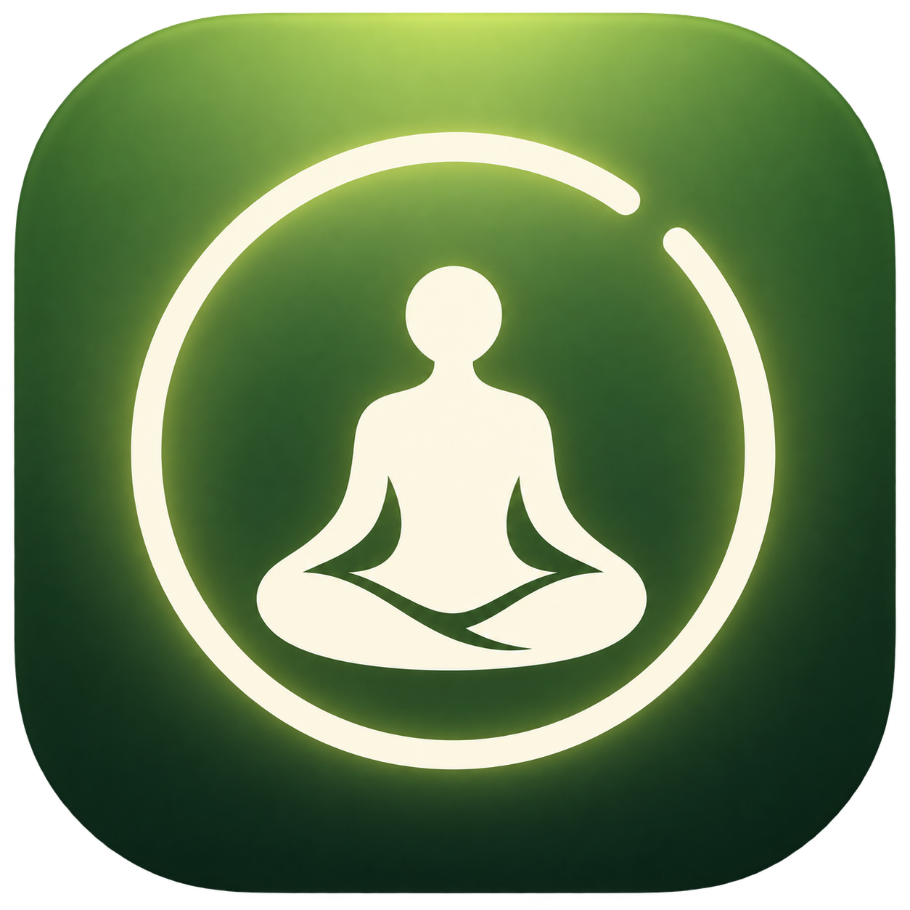

01 / REST
停一停，远眺一下。
按电脑活跃时间提醒休息。半透明的休息界面，随时可以跳过。
Break reminders that follow your active screen time. Always free to skip.

片刻 A MomentA LITTLE SPACE IN YOUR DAY
喝口水，走一走，看看远处。
一个安静待在 Mac 上的休息提醒。
A moment for yourself.
Water, a short walk, a little space for your eyes.
片刻 A Moment
01 / REST
按电脑活跃时间提醒休息。半透明的休息界面，随时可以跳过。
Break reminders that follow your active screen time. Always free to skip.
02 / HYDRATE
按自己的节奏设置间隔。离开电脑时保持安静，回来不补弹。
Set your own water rhythm. Stay quiet while away, without a backlog of popups.
03 / NOTICE
习惯日历留住每一次完成。记录保存在 Mac，随时导出备份。
A habit calendar for small wins. Your records stay on your Mac, ready to export.
TRY IT AT YOUR OWN PACE
免费下载，在应用内领取 30 天完整试用。到期后，一次购买即可永久解锁全部提醒。
中国大陆 ¥9.90 / US $1.49
不订阅，不自动扣款。试用结束后仍可查看和导出历史。
Download free and claim a 30-day trial. Unlock all reminders forever with one purchase. No subscription or automatic charge. History remains available after the trial.
Trial & purchase help →macOS 13+ · 简体中文 / English
用于日常健康习惯提醒，不提供医学诊断或治疗建议。 For everyday wellness habits, not medical diagnosis or treatment.